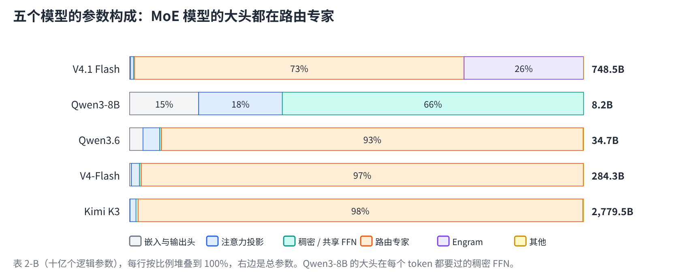
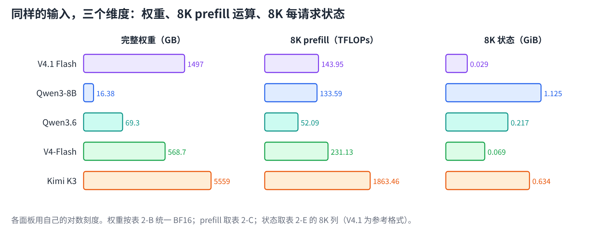
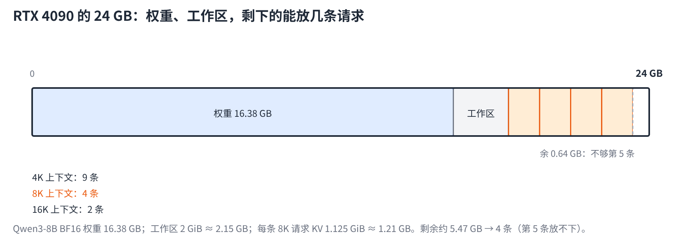
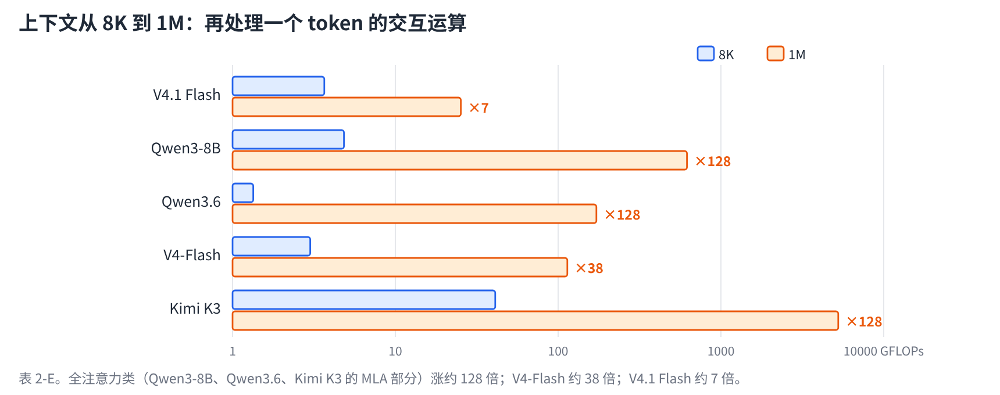
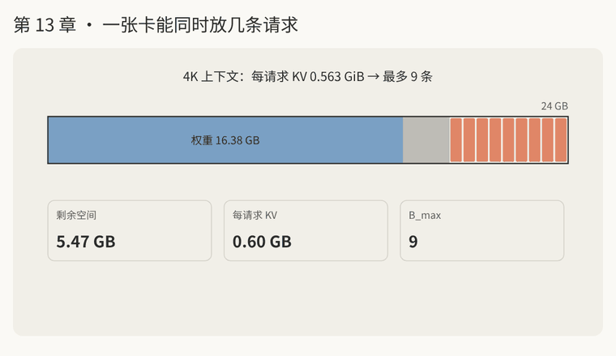

第 13 章 · 整个模型的资源需求与比较：存多少、算多少、能放几条请求
本地运行
git clone https://github.com/wikieden/ai-infra-from-constraints
cd ai-infra-from-constraints/code/notebooks
pip install jupyterlab torch numpy
jupyter lab ch13_model_comparison.ipynb也可以下载后直接用 VS Code 打开 .ipynb 运行。需要 GPU 的章节在 Colab 里选「代码执行程序 → 更改运行时类型 → GPU」。
本章回答：把注意力、专家、连接方式合起来，五个结构不同的模型各要存多少权重、一次调用算多少、一条请求占多少状态？一张卡放下权重以后，还能同时放几条请求？上下文从 8K 到 1M，谁涨得最快？
讲解日期：2026-11-24 · 上一章：第 12 章 网络形状 · 下一章：第 14 章 从单次请求到持续到达的负载（待写）
对应原文：materials/ai-infra-book/manuscripts/02-模型架构.md§2.6 L637–L900（表 2-A 到 2-E、图 2-28 到 2-36）、谬误与陷阱 L901–L909
本章缩写：BF16 = Brain Float 16（Google Brain 提出的 / 浮点 / 16 位）· CED = Causal Encoder-Decoder（因果 / 编码器 / 解码器）· FFN = Feed-Forward Network（前馈 / 网络）· GQA = Grouped-Query Attention（分组 / 查询 / 注意力）· KDA = Kimi Delta Attention（Kimi 的 / 增量修正 / 注意力）· KV = Key-Value（键 / 值）· MLA = Multi-head Latent Attention（多头 / 潜变量 / 注意力）· MoE = Mixture of Experts（混合 / 专家）。全部缩写见 缩写与术语表
第 07–12 章一块一块地拆了模型。本章把它们装回去，比较五个模型：DeepSeek V4.1 Flash、Qwen3-8B、Qwen3.6-35B-A3B、DeepSeek V4-Flash、Kimi K3。全章的主线是："保存整个模型要多少空间"和"处理一个 token 要用多少资源"要分开算。
讲解
第一步：五个模型的结构，和全模型的累加公式（2026-11-24）
类比：五家餐厅的配置表。 有的是一个大厨包办所有菜（稠密），有的养了几百个专科厨师、每桌只叫几个（MoE）；有的记账本每桌一本越记越厚（GQA），有的只留一张摘要卡（递推）。比较之前先列清楚配置。
表 2-A（原文 L647–L659，文本部分）：
| 架构 | V4.1 Flash | Qwen3-8B | Qwen3.6 | V4-Flash | Kimi K3 |
|---|---|---|---|---|---|
| 参数，约 | 551.57B + 196.93B Engram | 8.19B | 34.66B | 284.33B | 2.78T |
| 层数 | 40（20 + 20） | 36 | 40 | 43 | 93 |
| 隐藏维度 | 5120 | 4096 | 2048 | 4096 | 7168 |
| 注意力 | 2 SWA + 38 CSA2 | 36 GQA | 30 线性 + 10 全 | 2 窗口 + 21 CSA + 20 HCA | 69 KDA + 24 MLA |
| 每层路由专家 / 选几个 | 384 / 6 | — | 256 / 8 | 256 / 6 | 896 / 16 |
| 跨层连接 | Single-Pass mHC，4 路 | 普通残差 | 普通残差 | mHC，4 路 | AttnRes |
公式（原文 L682）：同一类层（注意力、前馈、连接相同）算一份，乘层数再加起来：
- \(g\)：层的类别；\(L_g\)：这类层有几层。
- MoE 层的 \(N_g\) 要算全部专家；\(F_g\) 只算实际收到的行（第 11 章）。
参数都放在哪（表 2-B，原文 L727–L733，单位十亿）：
| 模型 | 嵌入与输出头 | 注意力投影 | 稠密 / 共享 FFN | 路由专家 | Engram | 其他 |
|---|---|---|---|---|---|---|
| V4.1 Flash | 1.324 | 5.126 | 1.416 | 543.582 | 196.929 | 0.118 |
| Qwen3-8B | 1.245 | 1.510 | 5.436 | 0 | 0 | < 0.001 |
| Qwen3.6 | 1.017 | 1.283 | 0.126 | 32.212 | 0 | 0.022 |
| V4-Flash | 1.059 | 5.085 | 1.082 | 277.025 | 0 | 0.081 |
| Kimi K3 | 2.349 | 36.180 | 12.882 | 2722.741 | 0 | 5.333 |
Qwen3.6 的路由专家占约 93%，V4-Flash、Kimi K3 约 97%–98%：总容量主要由专家集合决定，单 token 运算只看选中的专家。

图 13-1 · 按表 2-B 分类堆叠（对数刻度的总长）。Qwen3-8B 的大头在每个 token 都要过的稠密 FFN；其他四个的大头在路由专家。
一句话：全模型 = 各类层的参数（或运算）× 层数 + 嵌入和输出头；MoE 模型存的绝大部分是路由专家。
第二步：同样的输入，三个数各不相同（2026-11-24）
类比：比较五家餐厅，要分开问三件事： 店面多大（权重容量）、做一桌菜要多少工时（运算量）、每桌客人的账本多厚（每请求状态）。
表 2-C（原文 L739–L745）+ 第 10 章的状态：
| 模型 | 完整权重（BF16，按表 2-B 换算） | 8K prefill（TFLOPs） | 单 token 选中专家权重（GiB） | 8K 每请求状态 |
|---|---|---|---|---|
| V4.1 Flash | ≈ 1497 GB | 143.95 | 15.820 | 0.029 GiB（参考格式，含 token 历史） |
| Qwen3-8B | 16.38 GB | 133.59 | — | 1.125 GiB |
| Qwen3.6 | ≈ 69.3 GB | 52.09 | 1.875 | 0.217 GiB |
| V4-Flash | ≈ 568.7 GB | 231.13 | 12.094 | 0.069 GiB |
| Kimi K3（紧凑 MLA） | ≈ 5559 GB | 1863.46 | 90.562 | 0.634 GiB |
三个对照（原文 L749）：
- Qwen3.6 存的权重约是 Qwen3-8B 的 4 倍，单步运算却更少（第 11 章：7.33 vs 20.0 GFLOPs）。
- V4-Flash 权重更大，8K 状态反而因压缩与选择更小（第 10 章）。
- Kimi K3 专家多、维度大、层数多，存得最多、算得也最多。

图 13-2 · 三个面板各用自己的对数刻度。同一个模型在三个维度上的位置差别很大，所以不能用"参数量"一个数代表模型的资源需求。
V4.1 的 CED 省了什么（表 2-D，原文 L765–L771）：8K 输入，参考全层前向 282.386 TFLOPs；CED + 末尾窗口重放只要 143.947 TFLOPs。省的几乎全在"20 层解码器的查询与前馈"（140.202 → 2.175）：解码器主体只处理末尾 128 个 token。但生成新 token 时两部分都要跑，所以 prefill 省的比例不能直接套到 decode 上。
发布文件的大小（原文 L753）：实际 checkpoint 用各自的低位宽格式，V4-Flash 主干约 156.02 GB，Kimi K3 文本约 1559.97 GB，比统一 BF16 小得多。
一句话：权重容量、单次运算、每请求状态是三个独立的维度，要分别算、分别比。
第三步：一张卡放下权重以后，还能放几条请求（2026-11-24）
类比：一个停车场，先把固定车位（权重）和通道（工作区）划掉，剩下的面积除以每辆车的车位大小，向下取整，就是还能停几辆。 半个车位停不了车。
公式（原文 L810）：
例子（原文 L815–L821）：RTX 4090（24 GB），Qwen3-8B BF16 权重 16,381,470,720 字节，工作区 2 GiB。
| 每请求上下文 | 每请求 KV | 剩余空间 ÷ 每请求 | \(B_{\max}\) |
|---|---|---|---|
| 4K | 0.5625 GiB | 9.06 | 9 |
| 8K | 1.125 GiB | 4.53 | 4 |
| 16K | 2.25 GiB | 2.26 | 2 |

图 13-3 · 扣掉 16.38 GB 权重和 2 GiB 工作区，剩下约 5.47 GB，只够放 4 条 8K 请求。
量化释放空间（原文 L825–L827）：70B 模型在 80 GB 的 H100 SXM 上，工作区 2 GiB，每条 8K 请求 KV 2.5 GiB：
| 权重方案 | 权重 | 8K 请求数 | 32K 请求数 |
|---|---|---|---|
| 8 比特 | 73.726 GB | 1 | — |
| 4 比特（含高精度部分、scale 与打包开销） | 39.500 GB | 14 | 3 |
反过来算：给定请求，权重最多能多大（原文 L848–L851）：
RTX 4090、2 GiB 工作区、4 条 8K 请求（每条 1.125 GiB）、BF16：最多约 85.1 亿参数，Qwen3-8B 的 81.9 亿刚好放得下。
场景代码：vLLM 启动时会打印它算出来的"能放多少 KV block"，就是这个公式（gpu_memory_utilization 决定 \(M_{\mathrm{device}}\) 里用多少）：
from vllm import LLM
llm = LLM(model="Qwen/Qwen3-8B", dtype="bfloat16",
max_model_len=8192, # 每请求最长上下文：决定一份状态多大
gpu_memory_utilization=0.9) # 只用 90% 显存：剩下的留给其他程序
# 日志里会有类似 "# GPU blocks: ..." 和 "Maximum concurrency for 8192 tokens per request: ..."
一句话：卡的容量扣掉权重和工作区，剩下的除以每请求状态、向下取整，就是能同时驻留的请求数；量化权重腾出空间，长上下文又把它吃掉。
第四步：上下文从 8K 到 1M，谁涨得最快（2026-11-24）
类比：同样从 8 页的文件换成 1000 页的书，有人每次都要从头翻（全注意力），有人只看目录和最近几页（压缩 + 窗口 + 索引）。
表 2-E（原文 L787–L793，单请求再处理 1 个 token）：
| 模型 | 8K 交互（GFLOPs） | 1M 交互（GFLOPs） | 8K 状态（GiB） | 1M 状态（GiB） |
|---|---|---|---|---|
| V4.1 Flash | 3.66 | 25.23 | 0.029 | 3.138 |
| Qwen3-8B | 4.83 | 618.48 | 1.125 | 144.000 |
| Qwen3.6 | 1.34 | 171.80 | 0.217 | 20.060 |
| V4-Flash | 3.00 | 113.80 | 0.069 | 6.735 |
| Kimi K3（紧凑 MLA） | 41.08 | 5257.04 | 0.634 | 27.423 |
（Qwen3-8B 和 Qwen3.6 的发布配置只支持 40,960 和 262,144 个位置，1M 行是按结构外推，用来看增长规律。）

图 13-4 · 对数刻度。Qwen3-8B、Qwen3.6、Kimi K3 的交互运算都涨了约 128 倍（和上下文同比）；V4.1 只涨约 7 倍，V4-Flash 约 38 倍。
- Qwen3-8B：8K → 1M 是 128 倍，交互运算和状态都正好 ×128（4.83 → 618.48，1.125 → 144）。
- V4.1：只有 4 份独立的全局 KV，主注意力每层最多读 128 个窗口位置 + 512 个条目，后续 Reindex 层只在至多 16384 个候选里扫描，所以只涨约 7 倍；但编码器的索引器和解码器首个索引器仍要扫描增长的历史。
- Kimi K3：KDA 部分固定，但 24 个 MLA 层仍要和全部历史交互，1M 时整模型单步约 5465 GFLOPs。
一句话：评估长上下文设计，要分别看保存了多少状态、访问了哪些位置、为索引和更新多做了多少工作。
第五步：四个常见误区（2026-11-24）
原文"谬误与陷阱"L901–L909：
| 误区 | 为什么错 | 回看 |
|---|---|---|
| 参数更多，每个 token 的计算量就一定更大 | 总参数决定容量；单 token 计算由选中专家、注意力类型和调用形状决定 | 第 11 章、本章第二步 |
| KV 降到 1/4，注意力计算也同比下降 | GQA 共享 KV，查询头仍各自打分；MLA 还改了上投影的位置 | 第 09 章 |
| 状态大小固定，访问开销就可以忽略 | 递推矩阵每步都要读写；prefill 还有临时块状态 | 第 10 章 |
| 输入 token 数相同，就能公平比较模型能力 | 同 token 数适合比较资源；同文本任务还要允许不同分词器产生不同长度 | 本章第六步 |
第六步：两种比较方式：同样的 token 数，或同样的文本（2026-11-24）
类比：比较两辆车，可以都跑 100 公里看油耗（同长度），也可以都从 A 地开到 B 地（同任务）：两条路线不一定一样长。
同长度（原文 L865–L873）：\(S = 0\)，\(P = 128\)，\(G = 4\)，\(B = 1\)（一次 prefill + 三次 decode，最终保存 131 个位置）：
| 模型 | 完整请求矩阵运算（TFLOPs） |
|---|---|
| V4.1 Flash | 4.14（128 个输入全在末尾重放窗口里，CED 没省下解码器的工作） |
| Qwen3-8B | 1.83 |
| Qwen3.6 | 0.66 |
| V4-Flash | 3.40 |
| Kimi K3 | 27.16 |
同文本（原文 L883）：同一段短文，Qwen 分出 523 或 524 个 token，V4-Flash 分出 501 个；较长文本分别是 2121 / 2122 个和 2036 个。先按相同标准判断答案对不对，再把各自的输入长度代入模型表算资源。
一句话：同 token 数回答"同样多的位置怎么算"，同文本回答"同一个任务要怎么执行"；比模型要两个都看。
动画演示：一张卡能同时放几条请求

可交互版：animations/13-model-comparison.html（滑块：每请求上下文 1K–64K、工作区 1–6 GiB；固定 RTX 4090 的 24 GB 和 Qwen3-8B BF16 权重）。
怎么看：
- 一根长条是 24 GB 显存：先放权重（蓝），再放工作区（灰），剩下的格子每格是一条请求的 KV（第三步）；
- 右边显示剩余空间、每请求 KV 和 \(B_{\max}\)；放不下的半格画成虚线；
- 播放时上下文 4K → 8K → 16K → 32K：请求数 9 → 4 → 2 → 1；
- 拖动工作区滑块，看多留 1 GiB 工作区要少放几条。
练习与作答记录
题 1（第三步）：一张 96 GB 的 RTX PRO 6000，跑 Qwen3-8B BF16（权重 16,381,470,720 字节），工作区 2 GiB。每请求 8K 和 32K 时各能放几条？
作答记录：（待作答）
题 2（第三步）：一张 80 GB 的 H100 SXM，工作区 2 GiB，要同时服务 8 条 8K 请求，每条 KV 1.125 GiB。BF16 权重最多能有多少参数？改成每参数 1 字节呢？
作答记录：（待作答）
题 3（第一、二步）：V4.1 Flash 如果不算 Engram（表 2-B 去掉 Engram 一列），统一 BF16 的权重多大？能放进一台 8 张 H100 SXM（共 640 GB）的服务器吗（只看权重）？算上 Engram 呢？
作答记录：（待作答）
原书练习 2-7（L841–L843：4K / 8K / 16K、工作区改 3 GiB、70B 4-bit 在 48 GB 卡上）、练习 2-8（L879–L881：前缀命中 1392 个 token 时的 \(S, P, G, n_d\)）、练习 2-9（L895–L897：按容量、计算与质量选模型）。想多练可以做。
口诀
存、算、账本三本账，各算各的别混一谈；
专家占了九成七，单 token 只算挑中的；
停车场先划固定位，剩下除以每辆车，向下取整；
一千页的书，从头翻还是看目录，涨得天差地别。
本章复习卡片
I44（全模型累加公式与参数分布）、I45（容量、运算、状态三个维度分开比）、I46（\(B_{\max}\) 与 \(N_{\max}\)）、I47（长上下文下各模型的增长）、I48（第 2 部分的四个误区）。练习做完后，按答错、卡住的地方再补。
附录 · 延伸阅读
留给以后深入学习用，不影响本章主线。★ 是建议先读的。
推荐阅读
| 读什么 | 读哪里 | 读它为了什么 |
|---|---|---|
| ★ AII 第 2 章 | §2.6 L637–L900、谬误与陷阱 L901–L909 | 本章原文，表 2-A 到 2-E |
| AII 第 2 章"模型矩阵查阅表" | L931 起 | 五个模型逐矩阵展开，查每一项来自哪个矩阵 |
| AII 第 2 章"本章练习与复现" | L911–L927 | calculations/calc.py 和 reproduce_ch02.py 的复算命令 |
AII 计算结果（原文 [^comparison-data]、[^long-context-data]） |
脚注链接 | 表 2-B 到 2-E 的逐项数据 |
| Llama 3 技术报告 | 推理部署一节 | 405B BF16 推理用两台 16 张 H100（原文 L853） |
| AII 第 6 章 | 超节点 | 一台服务器放不下时，每张卡的预算怎么分 |
数学原理
- 加权求和：全模型 = \(\sum_g L_g \times\)（一层的量），同类层只算一次。
- 向下取整：请求数必须是整数，\(\lfloor x \rfloor\) 是不超过 \(x\) 的最大整数。
- 按比例增长：交互运算和状态都正比于上下文时，上下文 ×128，它们也 ×128；有上限（窗口、top-k、固定状态）的部分不跟着涨。
公式清单
| 公式 | 意思 |
|---|---|
| \(M_W = b_W\sum_g L_g N_g + M_{\mathrm{emb}} + M_{\mathrm{head}}\) | 全模型权重 |
| \(F_{\mathrm{model}} = \sum_g L_g F_g + F_{\mathrm{head}}\) | 全模型运算 |
| \(B_{\max} = \lfloor (M_{\mathrm{device}} - M_{\mathrm{weight}} - M_{\mathrm{workspace}}) / M_{\mathrm{state}} \rfloor\) | 一张卡能放几条请求 |
| \(N_{\max} = (C - M_0 - BK) / b_W\) | 反推权重上限 |
代码对照：把本章的数字用代码算一遍
纯 Python，不需要 GPU。代码在仓库本地
ai-infra/solutions/chapter-code/ch13_model_comparison.py，配套测试tests/test_ch13.py：
bash cd ai-infra/solutions/chapter-code uv run python ch13_model_comparison.py # 一步一步打印 uv run pytest tests/test_ch13.py
讲义 ↔ 代码：
| 讲义 | 公式 | 写法 | 跑出来 |
|---|---|---|---|
| 第一步 路由专家占比 | 专家 ÷ 总和 | expert_share(name) |
Qwen3.6 93%，V4-Flash 97%，Kimi K3 98% |
| 第二步 完整权重 | 总参数 × 2 | bf16_gb(name) |
16.38、69.3、568.7 GB…… |
| 第三步 RTX 4090 | \(\lfloor \cdot \rfloor\) | b_max(24e9, QWEN8B_W, 2 GiB, KV) |
4K 9 条、8K 4 条、16K 2 条 |
| 第三步 70B 量化 | 同上 | b_max(80e9, 39.5e9, …) |
8 比特 1 条，4 比特 14 条，32K 3 条 |
| 第三步 反推 | \(N_{\max}\) | n_max(24e9, 2 GiB, 4, 1.125 GiB, 2) |
约 85.1 亿 |
| 第四步 增长倍数 | 1M ÷ 8K | growth() |
Qwen3-8B 128 倍，V4.1 约 6.9 倍 |
关键几行：
def b_max(device, weight, workspace, per_request):
return int((device - weight - workspace) // per_request) # 半条请求放不了：向下取整
def n_max(cap, workspace, B, kv, bytes_per_param):
return (cap - workspace - B * kv) / bytes_per_param # 先给请求留位，剩下给权重
代码里才看得到的 3 件事：
- 显存用十进制 GB（24e9），工作区和 KV 用 GiB（\(2^{30}\)）：混算前统一成字节；把 GiB 当 GB 用，每请求 KV 会少算约 7%，在临界处就会多算出一条请求。
- 表 2-B 的数是四舍五入后的十亿，加起来的总参数和表 2-A 有千分之几的出入；
bf16_gb用表 2-B 相加。 b_max没算每请求的递推和卷积状态（Qwen3-8B 没有）；混合模型要把它们一起放进分母（原文 L813）。
自己改一改（不影响练习答案）：
- 把 4090 换成 48 GB 的卡，看 8K 能放几条 Qwen3-8B 请求。
- 把 70B 4-bit 的上下文改成 16K，看能放几条。
- 用
growth()的数据算一算：V4-Flash 从 8K 到 1M，状态涨了多少倍？